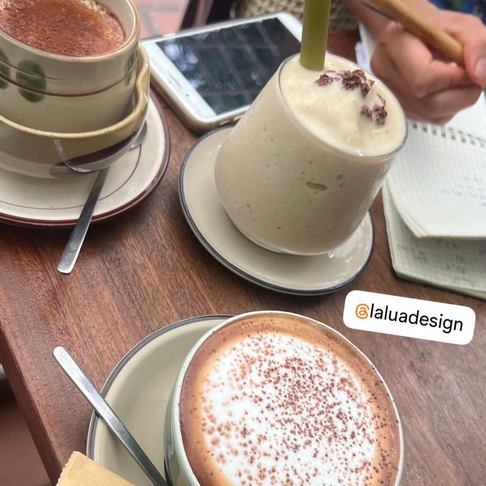
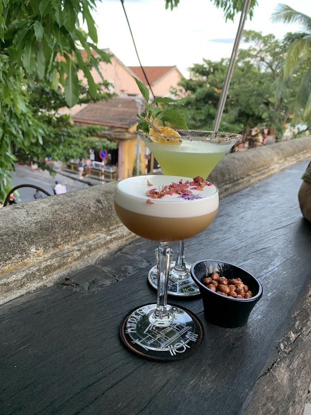
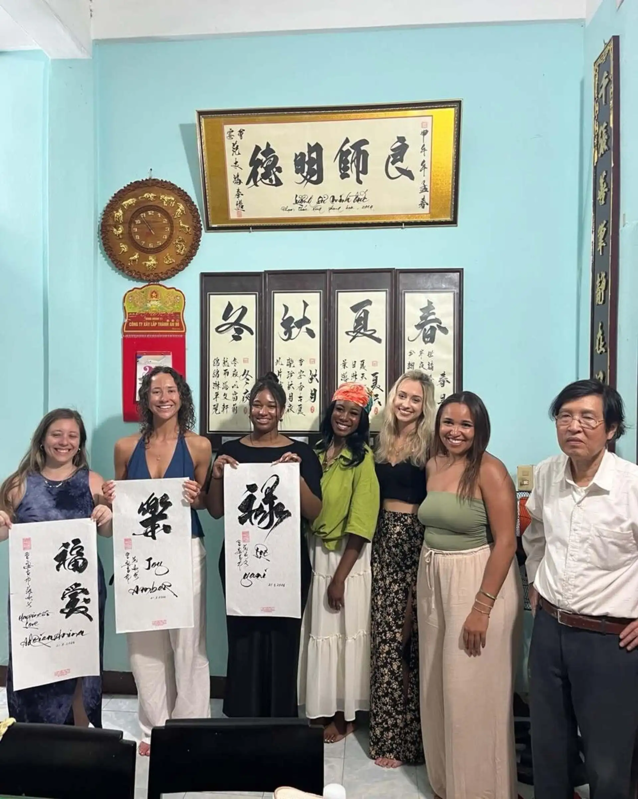

Hoi An, a little closer.
Stories from village roads, morning cafés, evenings in town and the people who keep its traditions alive.
.jpg) COUNTRYSIDE · 4 MIN READ
COUNTRYSIDE · 4 MIN READBeyond the Old Town: Hoi An by bicycle
The Old Town is often where a visit begins. The quieter roads beyond it offer a different sense of place: gardens, riverside homes, workshops and families going about their day. A bicycle gives you time to notice the distance between those moments.
Read the story ↗
COFFEE & CULTURE · 3 MIN READA slower morning in Hoi An
A morning in Hoi An does not have to begin with a checklist. Choose a street you have not walked before, find a place to sit and let the first cup of coffee set the pace.
Read the story ↗
FOOD & DRINK · 3 MIN READWhen Hoi An comes out after dark
Lantern light changes the feel of Hoi An, but the evening is not limited to its best-known streets. A walk with a local guide can connect the food, drinks and small venues you might otherwise pass by.
Read the story ↗
ART & TRADITION · 3 MIN READMake room for calligraphy and tea
Not every memorable hour needs a long route. Sometimes it begins at a table, with a brush in your hand and someone showing you how to slow down.
Read the story ↗